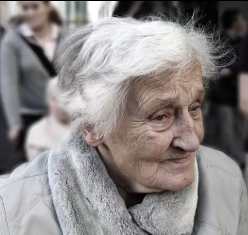

Testimoni Klien

"Melalui layanan kunjungan tempat tinggal, saya tidak merasa sendiri lagi dan relawan sangat baik."
- Ibu Siti
"Setiap hari jadi bersemangat! Relawan sangat menemani saya, jadi tidak merasa sendiri."
- Pak Joko
Layanan Kami

|
Telepon Harian Teman ngobrol via telepon setiap hari untuk menemani orang tua tersayang dan tercinta. |

|
Kunjungan Tempat Tinggal Relawan datang menemani dan menghibur secara langsung di tempat tinggal orang tua tersayang dan tercinta. |

|
Teman Jalan Pagi Menemani lansia jalan pagi atau olahraga ringan agar tetap sehat. |
Info Cepat
- Gratis pada pertemuan pertama
- Relawan tersertifikasi
- Bisa pilih caregiver sesuai karakteristik orang tua
- Layanan 24 jam atau sesuai kebutuhan
- Pengalaman merawat lansia & disabilitas
- Perawatan di rumah dengan pendekatan humanis
- Terlatih tangani kebutuhan medis ringan
- Laporan harian aktivitas klien